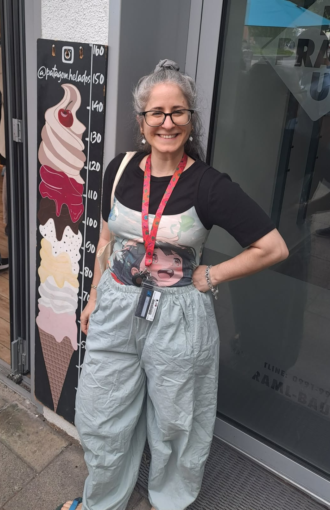

Hi, I’m Ioanna.
I study biological variation through genomics and epigenetics, build computational approaches for messy biological data, and communicate science beyond the lab.
About
PhD candidate at LMU Munich and IMPRS-BI, working across evolutionary biology, computational genomics and science communication.
I am an evolutionary biologist and computational genomics researcher studying how much of the variation we measure in biological data is real, repeatable and biologically meaningful.
My current work focuses on DNA methylation, quantitative genetics and technical variation in large epigenomic datasets. I am also increasingly interested in applying evolutionary thinking beyond classical biological systems, including information ecosystems and AI agents.
Alongside research, I write and talk about genetics, biodiversity, astronomy, AI, research culture and the social dimensions of science.
Research
Questions I currently work on, from methylation repeatability to quantitative genetics.
DNA methylation repeatability and technical variation
Developing statistical approaches to quantify methylation repeatability and separate biological signal from technical measurement variation.
Quantitative genetics of epigenetic variation
Using wild blue tit pedigrees and large EM-seq/RRBS datasets to study whether DNA methylation can be modelled as a quantitative trait.
Human multi-omics and vaccine response
Analysed transcriptomic and proteomic responses to BNT162b2 vaccination across healthy, elderly and Multiple Myeloma cohorts.
Evolutionary genomics of transposable elements
Studied population-genomic variation and signatures of selection around polymorphic transposable elements in rice.
Science communication
I like science best when people can poke it, question it and argue with it.
Soapbox Science Munich
Evolution, genetics and epigenetics on the street, with props, live demonstrations and lots of questions.
View event →Researchers' Night Greece
Using Zoological Museum specimens as conversation starters for evolution, biodiversity and genetics.
View event →Patras Science Festival
Turning living leaves into pictures with black-and-white image negatives and sunlight to make photosynthesis visible.
View event →Selected activities
Research communication, writing, astronomy, fieldwork and community work.
Astronomy Outreach & Stargazing
Public observing, outreach and stargazing activities, including Orion, Perseids observation and Parnonas outings.
Explore →SMBE 2026
Presented a statistical framework for DNA methylation repeatability in natural populations.
Explore →Creative Writing at The Munich Readery
Workshops, Write Night sessions, journaling and informal group writing practice.
Explore →Fieldwork & Laboratory
Wildlife field courses, collaborative sampling, bird fieldwork, alpine sampling and molecular biology lab work.
Explore →Teaching
From biology classrooms to computational biology with Python.
Links
A few more places to find my work.